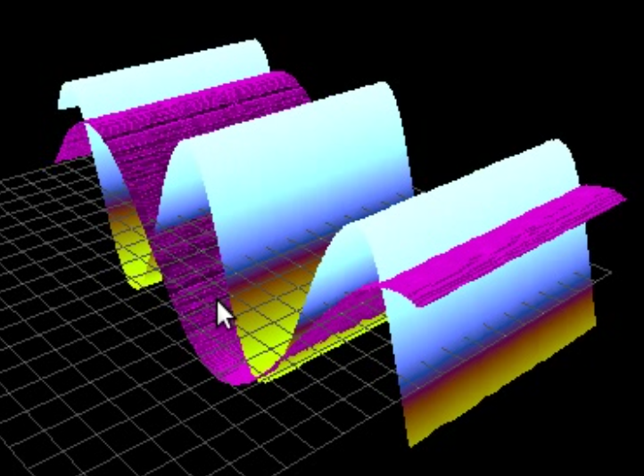

Copie d'écran : voir l'explication attachée
Copie d'écran : voir l'explication attachée
Copie d'écran de l'application
wirelessDemo
|
Un Outil de Labo à tout faire Manuel de l'Utilisateur
|
jithinbp.in/vLabtool Vidéos, exemples de code
courrier
Traduction :
Georges Khaznadar
|

Logo vLabtool
|
• Bon marché, polyvalent, cet outil d'acquisition de données et de contrôle transformera votre ordinateur en atelier pour les expériences de science et d'électronique .
|
Logo Ubuntu
Version 12.04
ou plus
|
|
Logo Python
Version 2.7
ou plus
|
Calibré à l'aide d'instruments professionnels pour une grande précision
|
Fonctionnalité |
Description |
Étiquettes des branchements |
Calibres |
|
Entrées analogiques |
Jusqu'à 10 entrées analogiques avec des calibres variés . Gains programmables et contrôle de décalage. Résolution 12-bit en tension, échantillonnage jusqu'à 1 M éch/s . Tension de référence 5ppm , 3,3 V. |
CH1, CH2 CH3, CH4 - CH7 SEN I2V |
± 16 V ± 3,3 V 0 − 3,3 V 0 − 3,3 V ± 3,3 mA |
|
Sorties analogiques |
Sources de tension programmables (12-bit)
Source de courant constant |
PVS1 PVS2 PVS3 PCS
|
±5V ±3,3V 0 − 3,3V 0 − 3,3mA |
|
Entrées numériques |
4 × entrées numériques compatibles TTL. Analyseur logique Fréquencemètre (0-30MHz) routines de mesure de temps ±2.5ppm, Oscillateur de référence à 12MHz |
ID1 - ID4 |
0-5 V |
|
Générateur de signaux |
|
Wavegen
SINE
SQ1 - SQ4 |
5Hz - 2MHz 0-4 Volts
14 k Hz ±4Volts 0 − 5Volts
10Hz- 1 6MHz 15nS 15nS |
|
Terminaux sans fil |
Unités additionnelles alimentées sur piles . Alimentation Transmission sans fil pour les capteurs Plusieurs terminaux simultanés Peut aussi contrôler des relais et lire des tensions. |
Pile /Adapt at e u r
|
3.7-4.2 V |
|
Bus de données |
I2C : maître Utilisé couramment par les capteurs intégrés SPI : maître Sélection des bornes des puces UART |
SCL,SDA
SCK,SDI,SDO
CS1 , CS2 |
|
|
Connecteur d'extension |
Connecteur à 20 – broches pour adapter des modules additionnels . Utilisations : SPI,I2C,E/ S analogiques , E/S numériques , sortie 16MHz TTL, et tension sinusoïdale ou continue. |
|
|
L'appareil a été testé sur des distributions à base Debian : Ubuntu 12.04 et plus, et Raspbian Wheezy. Le support pour Windows est en développement .
|
Processeur |
Les PC d'entrée de gamme ainsi que les Netbooks dotés de processeurs Intel Atom sont supportés . Pas de configuration particulière nécessaire. A été testé avec Raspberry Pi 2. |
|
Affichage |
Les applications graphiques peuvent se contenter d'un affichage 800x600 sans utilisation de barres de défilement . L'accélération graphique n'est nécessaire que si on utilise des graphiques 3D interactifs. |
Lancer les commandes suivantes dans un terminal (C trl -A lt -T) :
1. sudo apt-get install python-qt4 python-opengl python-qt4-gl python-scipy
python-numpy ipython-qtconsole python-setuptools python-sip
2. sudo easy_install pyqtgraph
3. sudo easy_install vLabtool
Voici une liste non exhaustive d'applications graphiques qui s'installent avec le module Python, et qu'on peut lancer depuis un terminal :
1. vLabtool-scope , oscilloscope à 2 canaux, analyseur logique à 4 canaux, avec des facilités de contrôle de périphériques et de modélisation de courbes.
2. vLabtool-stream , conçu pour tracer un graphique en continu à partir de n'importe quelle fonction du module Python vLabtool renvoyant un nombre entier ou décimal.
3. vLabtool-sensorDemo , auto-détecte les capteurs branchés au connecteur d'extension I2C, et trace les mesures dans des graphiques en temps réel. Il faut pour cela que la classe de capteur soit installée, plusieurs étant déjà supportées par défaut.
4. vLabtool-console , lance une console iPython avec les fonctions d'initialisation déjà exécutées. Une fenêtre de graphiques est aussi fournie, et on peut l'utiliser à l'aide d'un seul appel de fonction.
5. vLabtool-wirelessDemo , auto-détecte les terminaux sans fil du voisinage, liste leurs adresses et les capteurs connectés, trace les graphiques de tous les capteurs en temps réel.
6. vLabtool-bodePlots , utilise le générateur de signal sinusoïdal programmable et les entrées analogiques pour analyser les réponses en fréquence, amplitude et phase de filtres.
7. vLabtool-diodeIV , trace la caractéristique courant-tension d'une diode. Peut aussi afficher de multiples mesures dans une surface 3D pour étudier la dépendance en température.
Copier la commande suivante et la lancer dans un Terminal : vLabtool-scope
Il est aussi possible de modéliser les données, les résultats s'affichent en bas de la fenêtre.
|
|
CH1 : Canal 1 de l' oscilloscope |
|
Réaffectable |
Cette entrée n'est pas réservée à la prise nommée « CH1 ». Cela en fait un canal d'acquisition très souple, il est possible de l'affecter à n'importe laquelle des entrées analogiques à l'aide d'un menu déroulant dans le coin du haut. Elle a aussi un contrôle de décalage sur 12 – bit accessible à l'aide d'une barre de défilement. |
|
|
CH2 : Canal 2 de l' oscilloscope |
|
Fixé |
Ce canal ne traite que les signaux provenant de la prise nommée « CH2 ». |
|
|
TRIGGER : permet le choix du canal synchronisant l' oscilloscope |
|
Niveau |
Ce bouton rotatif règle le seuil de synchronisation, ce qui est aussi reflété par une marque apparaissant sur l'afficheur . |
|
Canal |
Le menu déroulant permet de choisir le canal de synchronisation. Si CH1 est sélectionné, le signal de synchronisation sera pris depuis l'entrée qui lui a été assignée. |
|
|
Intervalle de temps : choix pour le balayage de l' oscilloscope |
|
Balayage |
Règle le délai ( e n µs) entre deux points de données successifs . |
|
|
Modélisation sinusoïdale : utiliser Scipy pour modéliser les données par un sinus |
|
Menu 1 |
Choix du canal de données à modéliser. Utilise Scipy.optimize pour obtenir la fréquence , l' amplitude, la phase et le décalage. |
|
Menu 2 |
Choix d'un deuxième canal de données pour la modélisation. |
|
Case à cocher |
Incruster les résultats de modélisation . |
|
Résultats |
Les valeurs du modèle : a mplitude, fréquence , p hase, et décalage sont affichés dans le bas de la fenêtre. |
|
|
Lissajous : courbes XY |
|
Menu 1 |
Choix du canal de données pour l'axe X. |
|
Menu 2 |
Choix du canal de données pour l'axe Y . |
|
afficher |
Active/désactive l'incrustation du Lissajous. |
|
Animer |
Met en pause l'acquisition de données et anime la formation de la courbe X-Y. |
|
PVS1 |
Calibre : ± 5 V, règle la tension de sortie de la borne PVS1. Courant max. 5 mA. |
|
PVS2 |
Calibre : ± 3,3 V, règle la tension de sortie de la borne PVS 2 . Courant max. 5 mA. |
|
PVS3 |
Calibre : 0 − 3 V, règle la tension de sortie de la borne PVS 3 . Courant max. 5 mA. |
|
PCS |
Calibre : 0 − 3,3 mA, règle la tension de sortie de la borne PCS. Le courant dépend de la résistance de charge , PCS et PVS3 sont liés , un seul des deux est utilisable en même temps . |
|
GBF |
Calibre : 0 − 2MHz, règle la fréquence du générateur basse fréquence. Résolution max. 0,04 Hz, contrôle d'amplitude (±1 mV − ± 4V ) à l'aide d'un potentiomètre physique situé sur le boîtier. |
|
|
Signaux carrés corrélés en phase (SQ1,SQ2,SQ3,SQ4) |
|
Fréquence |
Calibre : 0 − 8MHz, règles la fréquence pour les quatre générateurs de signal carré. Résolution : 15 n s . |
|
Sortie |
Choix de la borne de sortie à configurer. |
|
Phase |
Règle la différence de phase (0 − 100%) entre le signal sélectionné et SQ1. |
|
Cycle |
Règle le rapport cyclique (0 − 100%) du signal sélectionné . |
|
Canaux actifs |
Nombre d'entrées à numériser . Les modes simple et double canal peuvent enregistrer jusqu'à 60 secondes entre deux changements d'état avec une résolution de 15 ns. Dans les modes trois et quatre canaux, on ne plus descendre qu'à un délai de 1 ms entre changements d'état successifs. |
|
Durée d'acquisition |
Durée d'échantillonage des données avant la récupération des résultats . L'analyseur logique rafraîchit les données en continu à cet intervalle de temps. |
|
|
Options de canal unique |
|
Canal |
L'entrée à enregistrer . À choisir entre ID1, ID2, ID3, et ID4. |
|
Fronts |
Types de changements d'état à enregistrer . Choix entre des options comme « front descendants seulement » , « fronts montants seulement », « tous les fronts ». |
|
|
Synchronisation |
|
Canal |
Active le changement d'état relatif au canal sélectionné. |
|
Fronts |
Types de changement d'état à utiliser pour la synchronisation. |
|
|
Modes 3/4 canaux |
|
CH1-CH4 |
Choix du type de changement d'état à enregistrer pour chaque canal quand l'analyseur logique est soit dans le mode 3 canaux, soit dans le mode 4 canaux. |
|
|
Intervalles de temps > Important ! Geler l'analyseur logique avant les mesures. |
|
Front 1 |
Choix du canal d'entrée et du type de front qui démarre le chronomètre. |
|
Front 2 |
Choix du canal d'entrée et du type de front qui arrête le chronomètre. |
|
Allez ! |
Lance la mesure . |
|
Résultats |
Les résultats seront affichés là en unité seconde. |
Copier la commande suivante et la lancer dans un Terminal : vLabtool-wirelessDemo
Copie d'écran : voir l'explication attachée
1. Brancher un capteur à un terminal sans fil en assemblant les bornes marquées Vdd, GND, SCL, SDA . Ces bornes apparaissent dans le même ordre sur la plupart des modules de capteurs, et il ne devrait pas être nécessaire d'ajouter des fils.
2. S'assurer que l'option « Enregistrer de nouveau terminaux » est sélectionnée dans l'application.
3. Brancher la batterie au terminal sans fil.
4. Vérifier que le logiciel a auto-détecté le nouveau terminal sans fil et aussi trouvé l'adresse du capteur qui a été connecté.
5. Désactiver « Enregistrer de nouveau terminaux » .
Si l'on veut, il est possible de déplacer le curseur sur une adresse de capteur, et le logiciel tentera de deviner son modèle et son type.
6. Cliquer sur « Rafraîchir la liste des terminaux » , cela crée des contrôles pour chaque terminal sans fil, et aussi un menu déroulant des capteurs connectés.
1. Après la séquence d'étapes ci-dessus, choisir le capteur approprié et cliquer sur « Allez ! », le logiciel enregistrera en continu les valeurs issues du capteur.
1. Ouvrir le menu auto-généré en bas à gauche, et changer les paramètres. Par exemple, le gain, la vitesse d'échantillonage, la sélection de type de donnée.
Cette application trace la courbe des valeurs de retour de toute fonction définie dans le module Python Module pourvu qu'il s'agisse d'entiers ou de nombres décimaux .
Copier la commande suivante et la lancer dans un Terminal : vLabtool-stream
1. Se référer au manuel du programmeur pour une liste de commandes valides , et choisir la fonction qu'on veut surveiller. On peut ouvrir le manuel depuis le menu d'aide.
2. Copier le nom de la commande avec les arguments corrects dans l'application . Et ensuite, cliquer sur « Surveiller ». L'application fournit quelques commandes usuelles et des arguments appropriés rassemblés dans un menu déroulant liée à la boîte de saisie des commandes.
|
Voltmètre |
Active un widget qui fait une mesure de tension à chaque clic. |
|
Amplificateurs |
Active un widget qui règle le gain des canaux d'entrées analogiques. |
|
GBF |
Active une barre de défilement pour régler la fréquence de la sortie de signal sinusoïdal. |
|
Sources UI |
Active des widgets pour régler les sources de tension et de courant. |
|
Temps |
Active des widgets de mesures temporelles , tels que le rapport cyclique et la fréquence. |
|
Console |
Ouvre une console iPython avec les commandes d'initialisation exécutées . |
|
Aide |
Menu d'aide qui donne accès au manuel du programmeur ainsi qu'aux fichiers HTML spécifiques à des expériences. |
|
CH1 |
Calibre: ± 16 V , Gain : jusqu'à 32×, entrée « alternatif » séparée. |
|
CH2 |
Calibre: ± 16 V , Gain : jusqu'à 32×, entrée « alternatif » séparée. |
|
CH3 |
Calibre: ± 3,3V , Gain : jusqu'à 32×, contrôle de décalage 12-bit.
*
contrôle de gain manuel avec une résistance
R
g
à la masse
.
|
|
CH4 |
Calibre: 0 – 3,3V , Gain : jusqu'à 32×, contrôle de décalage 12-bit. |
|
CH5 |
Calibre: 0 – 3,3V , Gain : jusqu'à 32×, contrôle de décalage 12-bit. |
|
CH6 |
Calibre: 0 – 3,3V , Gain : jusqu'à 32×, contrôle de décalage 12-bit. |
|
CH7 |
Calibre: 0 – 3,3V , Gain : jusqu'à 32×, contrôle de décalage 12-bit. |
|
SEN |
Calibre:
0 –
3,3V
,
tiré en interne à 3,3V via une résistance de
|
|
AN2 |
Calibre: 0 – 3,3V , disponible sur le connecteur d'extension. |
|
AN3 |
Calibre: 0 – 3,3V , disponible sur le connecteur d'extension. |
|
|
Surveillances internes |
|
5 V |
La tension d'alimentation , mesure la tension du port USB. |
|
V+ |
Mesure la tension de sortie . À surveiller pour savoir si des charges externes l'affectent. |
|
|
Générateurs de signaux (GBF) |
|
WG1 |
Générateur basse fréquence 0-2MHz sinus/triangle , Calibre: ± 4 V. Contrôle manuel d'amplitude à l'aide d'un potentiomètre situé sur le côté du boîtier. Résolution 28-bit (0,04Hz). |
|
SINE |
Générateur sinusoïdal de fréquence fixe 14 k Hz. Calibre: ±4V. |
|
|
Sources de tension et de courant programmables (12-bit) |
|
PVS1 |
Calibre : ± 5 V, jusqu'à 10 mA. |
|
PVS2 |
Calibre : ± 3,3 V, jusqu'à 10 mA. |
|
PVS3 |
Calibre : 0 − 3,3 V, jusqu'à 10 mA. |
|
PCS |
Calibre : 0 − 3,3 mA. Selon la résistance de charge . Jusqu'à une chute de tension de 3,3 V. |
|
|
Analyseur logique , fréquencemètre , fonctions temporelles |
|
ID1 |
Calibre : 0 − 5 V, 0-32 MHz. |
|
ID2 |
Calibre : 0 − 5 V, 0-32 MHz. |
|
ID3 |
Calibre : 0 − 5 V, 0-32 MHz. |
|
ID4 |
Calibre : 0 − 5 V, 0-32 MHz. |
|
|
4× sorties PWM, résolution de 15 ns pour fréquence, phase, et rapport cyclique |
|
SQ1 |
Calibre : 0 − 5 V. |
|
SQ2 |
Calibre : 0 − 5 V. |
|
SQ3 |
Calibre : 0 − 5 V. |
|
SQ4 |
Calibre : 0 − 5 V. |
|
|
I2C (Inter-Integrated Circuit) maître : jusqu'à 4 MHz de fréquence d'horloge |
|
Application |
Test é avec plusieurs capteurs , MPU6050, MLX90614, HMC5883L, BMP180, TSL2561, SHT21 etc. Ceux-ci mesurent la vitesse angulaire, l'accélération, la température, l'humidité, la lumière, la pression et le champ magnétique. |
|
Vdd |
Tension d'alimentation de 3,3V. |
|
GND |
Retour de l'alimentation . |
|
SCL |
Sortie de l'horloge I2C. |
|
SDA |
Ligne des données I2C. |
|
|
SPI(Serial-Peripheral Interface) maître : disponible sur le connecteur d'extension . Support e tous les quatre modes d'opération. |
|
SCK |
Sortie d'horloge SPI, testée jusqu'à 16 MHz. |
|
SDO |
Sortie des données SPI (MOSI). |
|
SDI |
Entrée des données SPI (MISO). |
|
O1 |
Choix de puce 1. |
|
O2 |
Choix de puce 2. |
|
DDS |
Sortie TTL 16 MHz , 0-3,3 V. Elle sert aussi d'horloge de référence pour le générateur basse fréquence sinus/triangle 0-2 MHz, et peut être utilisé pour créer des ajouts corrélés en phase avec le GBF. |
|
AN2 |
Entrée analogique , Calibre: 0 − 3,3 V. |
|
AN3 |
Entrée analogique , Calibre: 0 − 3,3 V. |
|
GND |
Abrégé pour GROUND = la terre . C'est la référence pour les tensions, considérée comme 0 volt. Elle est aussi connectée à la terre des sources d'alimentation (ordinateur portable, tablette, Rpi, etc.) |
|
V+/V- |
Tensions d'alimentation , ± 9 V. Limitées à 20 mA par canal . |
 Copie d'écran : voir l'explication attachée
Copie d'écran : voir l'explication attachée
Capable de communiquer avec plusieurs terminaux sans fil pour contrôler des capteurs et en recevoir des données.
|
I2C |
Bus de données pour interfacer des capteurs usuels . On peut mesurer des paramètres physiques avec une interférence mécanique minimale. |
|
SPI |
Un autre bus de données utilisé par certains appareils . Les appareils intéressants pour vLabtool sont des générateurs basse fréquence de précision, et des instruments analogiques de haute résolution. |
|
RGBout |
Contr ô l e des guirlandes de WS2812B , qui sont des DELs R V B pilotables pour obtenir une palette de 16 millions de nuances. |